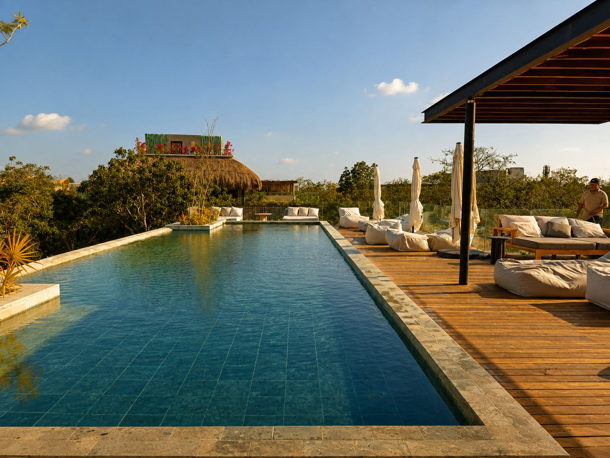
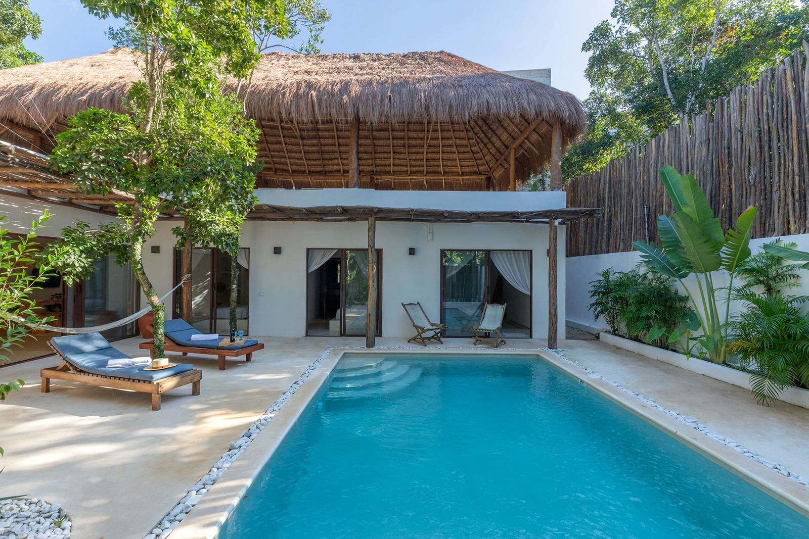
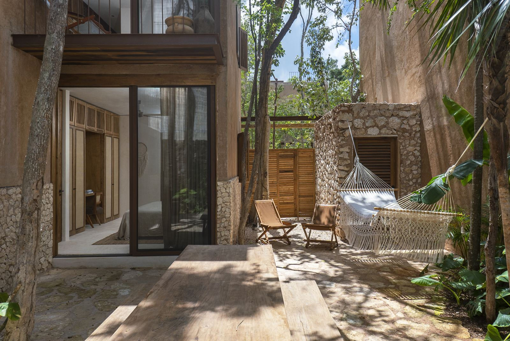
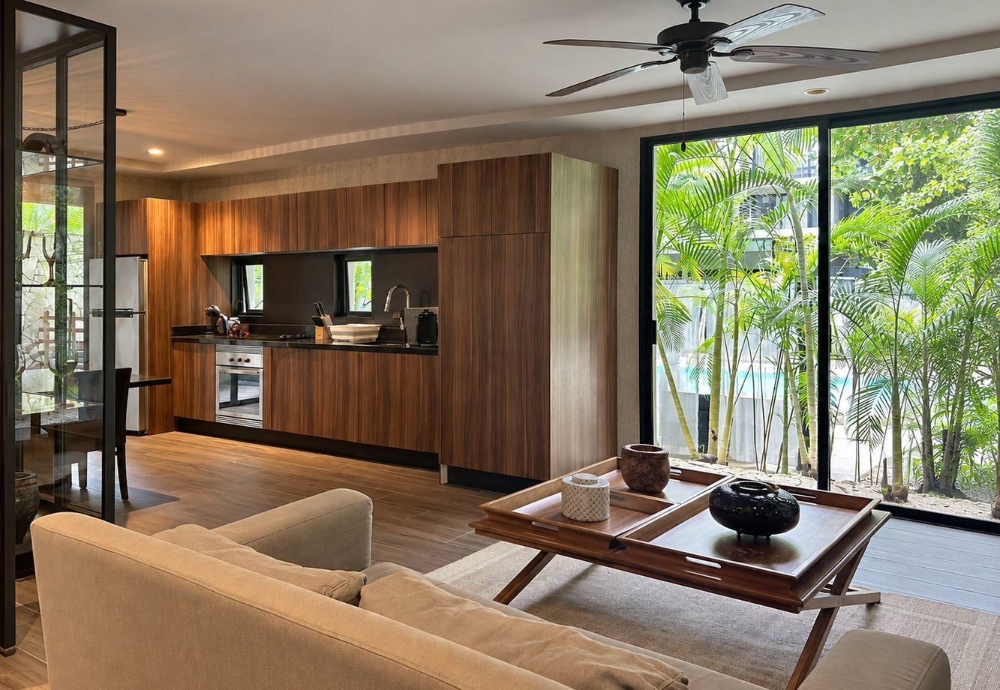
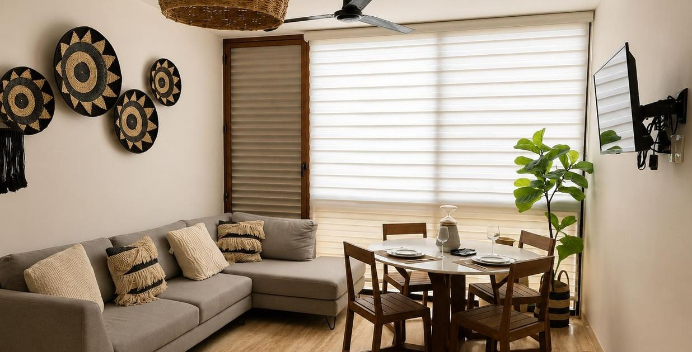

Who is Jorge Ángel Mejía?
Jorge Ángel Mejía Hernández is a Sales Manager and real estate advisor at Engel & Völkers Tulum, advising buyers and sellers across Tulum and the Riviera Maya.
Tulum · Riviera Maya · Engel & Völkers
Jorge Ángel Mejía is a Sales Manager and real estate advisor at Engel & Völkers Tulum. Since 2012, he has advised international buyers and sellers across Tulum and the Riviera Maya, with a focus on branded residences, hospitality-linked property and evidence-led market decisions. He works in English and Spanish.
View properties Find your placeInsights
01 · Market Intelligence
Tulum's Q3 2026 data: hotel occupancy, international arrivals, short-term rental supply, build costs and what disciplined buyers should do now.
02 · Market Intelligence
Episode 1: why Tulum's real story is the shift in bargaining power, as softer tourism, selective credit and cash flow separate comparable assets.
03 · Market Intelligence
Episode 2: why bridge lenders' selectivity separates developments on the same street, and why cash and clean documentation now carry a premium in Tulum.
04 · Market Intelligence
Episode 3: six filters to separate a temporarily distressed Tulum asset from a structurally impaired one before you buy at a discount.
05 · Market Intelligence
ODEA House of Music is scheduled to debut beside UMusic Hotel Tulum in late December 2026. The more important signal is the operating model behind it.
06 · Global Capital
Argentina priced citizenship without property. What the decoupling of passports and real estate means for mobile families looking at the Riviera Maya.
07 · Buying Well
Five standards every buyer should expect from a real estate advisor in Tulum and the Riviera Maya: relevance, evidence, transparency, coordination, accountability.
08 · Buying Well
Exchange rates, international transfer costs and transaction coordination: what international buyers should check before sending USD or CAD to Mexico.
09 · Buying Well
No nonstop MSP to Tulum flight is listed for winter 2026–27. How Minneapolis buyers actually reach Tulum, and why it should shape where you buy.
10 · Tulum
The three waves that built Tulum: pioneers, founder-designers behind Azulik, Be Tulum and Coqui Coqui, and the brands that took it global.
11 · Tulum
Aldea Zamá, La Veleta, the Hotel Zone or Tankah Bay: a Chicago buyer's guide to Tulum neighbourhoods now that United has left Tulum's airport.
12 · Wellness Real Estate
Wellness real estate reached USD 876 billion in 2025. What separates real wellness homes from wellness marketing in Tulum and the Riviera Maya.
13 · Wellness Real Estate
The Estate by sbe and the shift of wellness from amenity list to operating model, and the accountability questions Tulum buyers should ask.
14 · Wellness Real Estate
Analog wellness, human connection and the future of restorative residences in Tulum.
15 · Wellness Real Estate
Women’s health, hospitality and the next generation of wellness residences in Riviera Maya.
16 · Wellness Real Estate
Brain wellness, environmental comfort and the credibility test for luxury real estate in Tulum.
17 · Branded Residences
The biggest risk to a luxury residence in Tulum may be that what makes it exceptional today becomes ordinary tomorrow. What is hardest to reproduce.
18 · Branded Residences
Brand Mythologies No. 1: the stories luxury hotel brands tell, and the five questions to ask before falling for a legend in a Quintana Roo branded residence.
19 · Branded Residences
Mandarin Oriental Kanai partners with Chef Grant Achatz and The Alinea Group on WONDERS. What it means, and what to verify, for branded-residence buyers.
20 · Branded Residences
Mandarin Oriental Kanai appoints artist Bosco Sodi as art curator. Why authorship, art and context matter when evaluating a branded residence.
21 · Branded Residences
Mandarin Oriental Kanai has broken ground. See what is confirmed about residential sales, the Sales Pavilion and the planned 2028 resort opening.
22 · For Sellers
How OMNI MLS and the Engel & Völkers international network help Tulum sellers reach qualified buyers, and why pricing still comes first.
About
My career in hospitality, leisure and marketing began in 2007, with consulting experience in the United States, Canada, Southeast Asia, Ireland, Uruguay and Mexico. Since 2012, I have advised buyers and sellers in Riviera Maya real estate, including Tulum.
Today I lead sales at Engel & Völkers Tulum, working with international buyers, sellers and family offices on residences, branded residences and investment property across the Riviera Maya.
Buyer questions
Jorge Ángel Mejía Hernández is a Sales Manager and real estate advisor at Engel & Völkers Tulum, advising buyers and sellers across Tulum and the Riviera Maya.
His published focus includes Tulum and the wider Riviera Maya, including Playa del Carmen and Cancún.
His work focuses on branded residences, hospitality-linked property, market analysis and evidence-led property decisions.
He works in English and Spanish.
Properties

Boca Paila · South Hotel Zone, Tulum
USD 5,995,000

Tankah Bay, Tulum
USD 2,195,000

Aldea Zamá, Tulum
USD 1,195,000

Aldea Zamá, Tulum
USD 1,050,000

Aldea Zamá, Tulum
USD 785,000

La Veleta · Región 15, Tulum
USD 714,000

Aldea Zamá Premium, Tulum
USD 649,000

Lúum Zamá, Tulum
USD 485,000

Región 15, Tulum
USD 430,000

Región 15, Tulum
USD 399,000

Aldea Zamá, Tulum
USD 250,000

Aldea Zamá, Tulum
USD 135,000
Tell me what you are looking for and I will come back with a considered answer, not a list of listings.
Start the conversationWhatsApp